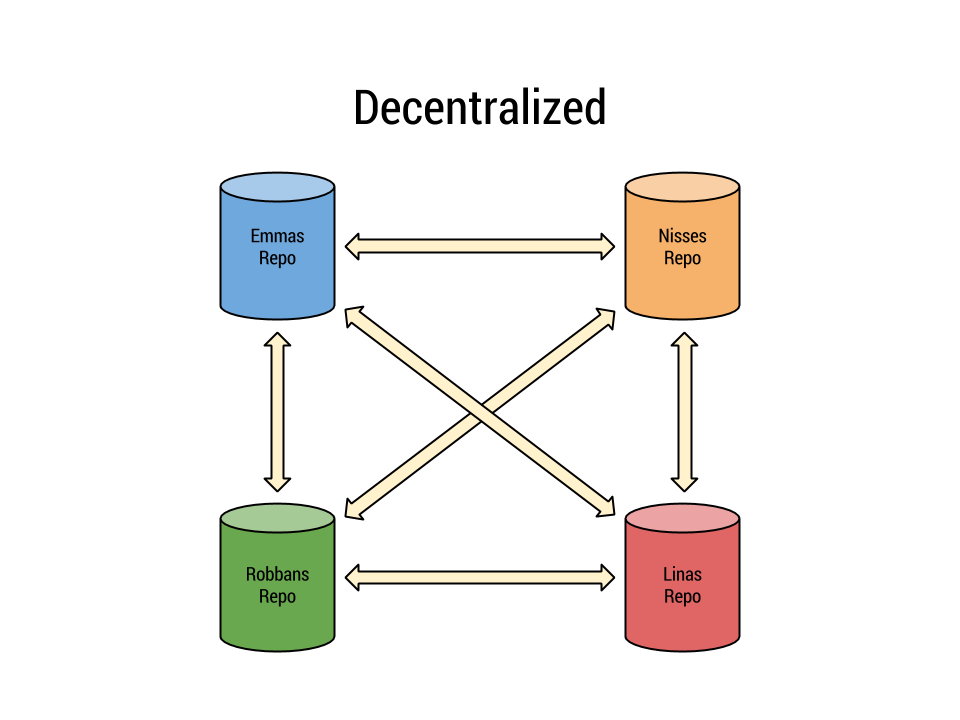
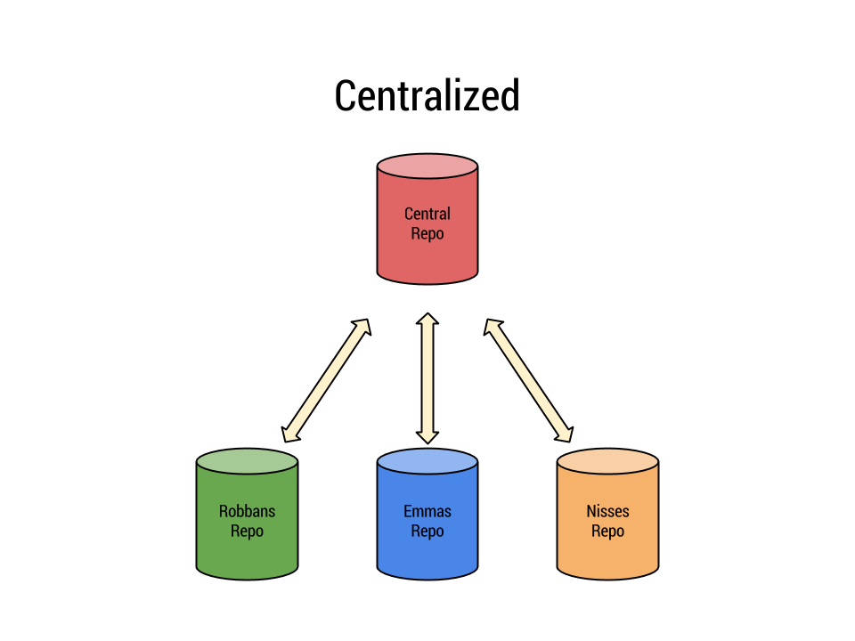
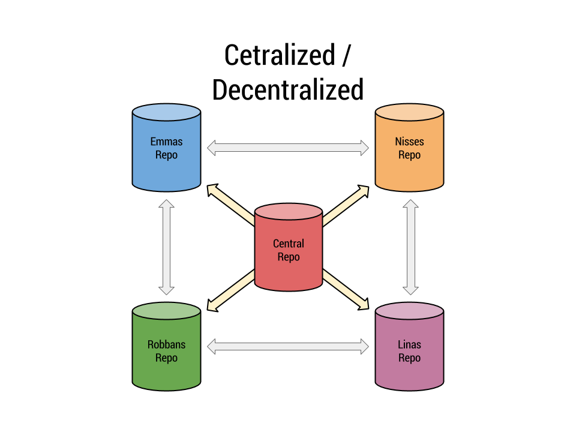
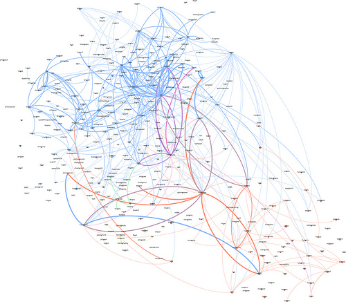
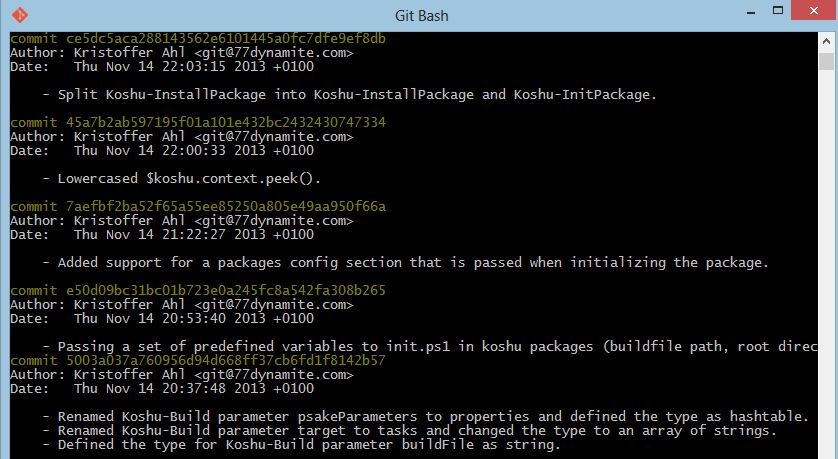
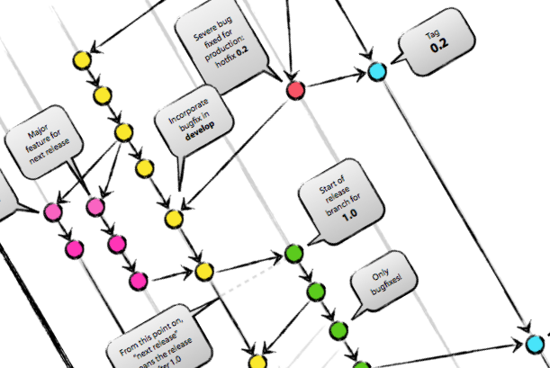
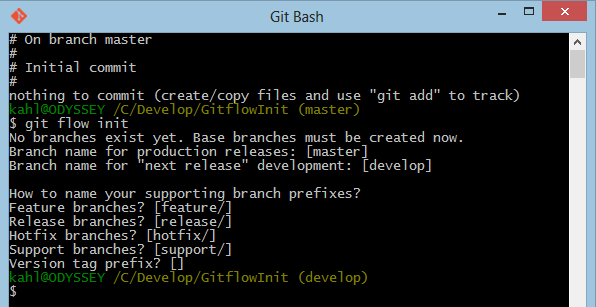
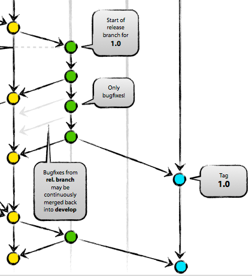

Gitflow
Bringing order to chaos
Av Kristoffer Ahl / @kristofferahl
www.dotnetmentor.se
Agenda
- Git
- Gitflow
- Länkar
- Frågor
Git 
"Source control the way it was meant to be"
- Linus Torvalds
Alex Dawson - Flickr - Creative Commons
Git
Git skapades 2005 av Linus Torvalds för att hantera
källkoden till Linuxkärnan
Mål
- Snabbt
- Starkt stöd för icke-linjär utveckling
- Fullt ut distribuerat
- Kunna hantera stora projekt
Git versus ...
Git är en key/value store
Allt i git lagras som olika typer av objekt
Varje commit identifieras med en hash (SHA-1)
som unikt identifierar den och dess förälder
- Commit object
- Tree object
- Blob object
Den stora skillnaden mellan Git och andra VCS ...
... är det sätt som Git tänker på dess data
Subversion med vänner
- Håller en lista med filer och dess ändringarna över tid
- Varje version sparas som en diff i förhållande till den föregående
Git
- Gör snapshots av hela repositoryn
- Om en fil inte ändrats, används istället en referens till den senast kända versionen
Git ♥ Distribuerat = Sant
Decentralized VCS

Har inget centralt arkiv (repository)
Centralized VCS

Har ett centralt arkiv (repository)
Decentralized VCS + Centralized

Varje utcheckning är en fullständig kopia
git clone https://github.com/kristofferahl/FluentSecurity.git
Offline
Dr EG - Flickr - Creative Commons
Git ♥ Branching = Sant
git checkout -b feature/create-invoice
git branch
develop
* feature/create-invoice
master
Branching är ett kärnkoncept i Git
Inte ett sidospår!
En branch är en "label" som pekar på en commit
Chaos
Sebastien Wiertz - Flickr - Creative Commons
Distribuerat

franckcuny - Flickr - Creative Commons
Branching
Nevil Zaveri - Flickr - Creative Commons
Historiken

"With great power, comes great responsibility"
Martha Silva - Flickr - Creative Commons
Tänk om...
Jacob Bøtter - Flickr - Creative Commons
Gitflow
Bringing order to chaos

Vincent Driessen - Nvie.com
"A successful Git branching model"
av Vincent Driessen
Vincent Driessen - Nvie.com
Gitflow
En uppsättning hög-nivå extensions över git
Gitflow är med andra ord
- En strategi/modell för branching och merging i git
- Extensions för git
Vad Gitflow ger dig
- Stöd för paralell utveckling
- Struktur för samarbete
- Release staging
- Hotfixes
Använder en "Truth" repository
som framöver kommer kallas för "origin"

Vincent Driessen - Nvie.com
git pull origin some-branch
git push origin some-branch
Två typer av brancher
- Main branches (Långlivade)
- Supporting branches (Kortlivade)
Main branches (Långlivade)
-
master
The production code base. No code changes are ever made directly to this branch.
-
develop
Code ready for production. Commits are allowed but they should be very small and focused. It must be ready for release to production.
Supporting branches (Kortlivade)
-
feature
Active code development. Usually related to a ticket or workitem. This is where you do most of your development.
-
release
Temporary integration branch. Do QA and make the code ready for deployment. Bumping version numbers.
-
hotfix
Temporary integration branch for production bug fixes.
Gitflow awesome-sauce

Vincent Driessen - Nvie.com
Installera gitflow
git flow init

git flow init
Sätter upp en befintlig eller ny repository
Master & Develop
- Varje commit i master representerar en release
- En commit görs bara i master vid release
- Develop är den branch som representerar nästa release
- Develop ska alltid vara redo för release utan förvarning
Master & Develop

Vincent Driessen - Nvie.com
Feature
- Prefixas med
feature/
- Utgår alltid från
develop
- Slås alltid ihop med
develop
git checkout -b feature/my-new-feature develop
git checkout develop
git merge --no-ff feature/my-new-feature
git branch -d feature/my-new-feature
git push origin develop
git merge --no-ff

Vincent Driessen - Nvie.com
Feature

Vincent Driessen - Nvie.com
Features med gitflow
git flow feature
git flow feature start <name>
git flow feature finish <name>
git flow feature publish <name>
git flow feature pull <remote> <name>
Release
- Prefixas med
release/
- Utgår alltid från
develop
- Slås alltid ihop med
master och develop
git checkout -b release/3.1 develop
git commit -a -m "Bumped version number to 3.1"
git checkout master
git merge --no-ff release/3.1
git tag -a 3.1
git checkout develop
git merge --no-ff release/3.1
git branch -d release/3.1
git push origin --all
git push origin --tags
Release

Vincent Driessen - Nvie.com
Releases med gitflow
git flow release
git flow release start <release>
git flow release finish <release>
Hotfix
- Prefixas med
hotfix/
- Utgår alltid från
master
- Slås alltid ihop med
master och develop|release
git checkout -b hotfix/3.1.1 master
git commit -a -m "Bumped version number to 3.1.1"
git checkout master
git merge --no-ff hotfix/3.1.1
git tag -a 3.1
git checkout develop
git merge --no-ff hotfix/3.1.1
git branch -d hotfix/3.1.1
git push origin --all
git push origin --tags
Hotfix

Vincent Driessen - Nvie.com
Hotfixes med gitflow
git flow hotfix
git flow hotfix start <release>
git flow hotfix finish <release>
Summering
Vincent Driessen - Nvie.com
## Länkar
- [http://nvie.com/posts/a-successful-git-branching-model/](http://nvie.com/posts/a-successful-git-branching-model/)
- [https://github.com/nvie/gitflow](https://github.com/nvie/gitflow)
- [http://try.github.com](http://try.github.com)
- [http://tom.preston-werner.com/2009/05/19/the-git-parable.html](http://tom.preston-werner.com/2009/05/19/the-git-parable.html)